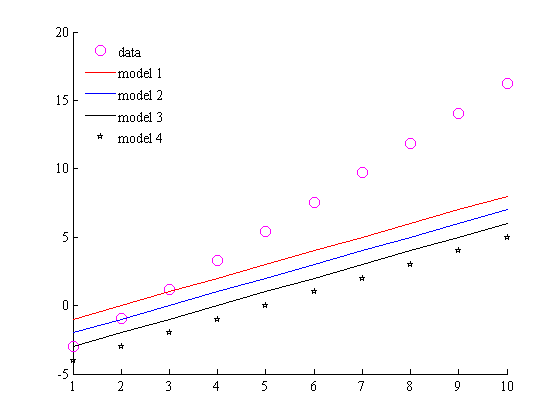
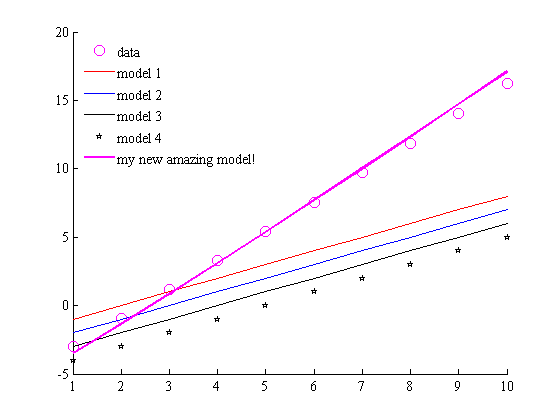
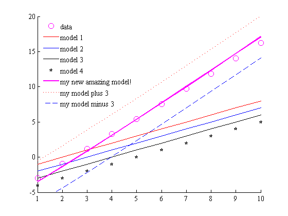
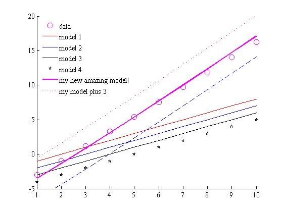
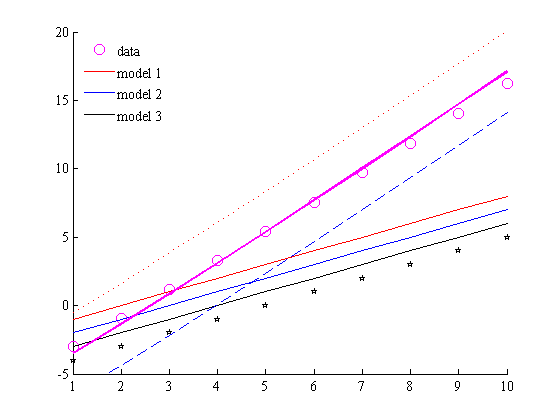

legappend
The legappend function adds new entries to a legend. This is good for making PowerPoint slides, when you may want to start by plotting a few data sets, then add data to your plot one entry at a time. This function eliminates the need to copy and paste the complete legend creation code each time you add a curve to a plot, and alleviates the minor headaches you'd experience if you decided to rearrange the order in which items are plotted.
Contents
Syntax
legappend('new legend entry')
legappend('new entry 1','new entry 2',...,'new entry N')
legappend('')
legappend('','',...,'')
[legend_h,object_h,plot_h,text_strings] = legappend(...)Description
legappend('new legend entry') appends an existing legend with new legend entry.
legappend('new entry 1','new entry 2',...,'new entry N') adds several new entries to the legend.
legappend('') deletes the last entry from the legend.
legappend('','',...,'') deletes the last several entries from the legend.
[legend_h,object_h,plot_h,text_strings] = legappend(...) returns legend_h, the handle of the new legend; object_h, handles of the line, patch, and text graphics objects used in the legend; plot_h, handles of the lines and other objects used in the plot; and text_strings, a cell array of the text strings used in the legend. Note that for new legend entries, legappend does not add entries to a current legend, but deletes the current legend and recreates a new one. As a result, the legend handle will change with each new-entry use of legappend. The legend handle does not change when legappend is used to delete an entry.
Examples
Say you have some data, and a number of old models exist to try and explain the data.
% Some data and old models: x = (1:10)'; y = [x-5+x.^1.05 x-2 x-3 x-4 x-5]; % Plot the data and old models: figure plot(x,y(:,1),'mo','markersize',10); hold on; plot(x,y(:,2),'r'); plot(x,y(:,3),'b'); plot(x,y(:,4),'k'); plot(x,y(:,5),'kp'); box off axis([1 10 -5 20]) legend('data','model 1','model 2','model 3','model 4','location','northwest') legend boxoff
Add one entry
Now you've come up with your own model and you want to add it to the plot you've already created. Without legappend, you'd have to recreate the legend by legend('data','model 1','model 2','model 3','model 4','my new amazing model','location','northwest'); legend boxoff. That's not so awful if you only have to do it once, but our example here is simple. If you're telling a more complex story with a slowly-building plot, adding one entry at a time, the bookkeeping can become a bit unwieldy. This is especially true when tinkering with the order in which you want to add different curves to your plot.
Back to our simple example: We've plotted some observational data along with a few old models that attempt to describe the data. But you've come up with your own model and you want to show the scientific community how amazing your model is. When you're giving a talk to the bigwigs at the conference this is the point in your lecture when you'd say, "Look at how poorly the old models models fit the data--wouldn't it be great if we had a better model?" And now for the dramatic unveil:
myNewModel = x - 5.5 + x.^1.1; plot(x,myNewModel,'m','linewidth',2); legappend('my new amazing model!')
Add two entries
Now suppose you want to add two entries at a time. Here's how:
plot(x,myNewModel+3,'r:') plot(x,myNewModel-3,'b--') legappend('my model plus 3','my model minus 3')
Delete a line
Now for some reason you'd like to remove the last entry from a legend. This will not delete the plotted data, but it will delete the last entry from the legend.
legappend('')
 Delete three lines
You can delete several entries from legend at once like this:
legappend('','','')
Usage note
Although this function claims to "append" new entries to an existing legend, in truth it deletes the existing legend and attempts to recreate a very similar legend with the new entries in it. This may mean that it won't get all of your settings right, and it also means you'll have a new legend handle each time you use the legappend function to add new legend entries.
Author Info
This function was created by Chad A. Greene of the Institute for Geophysics, The University of Texas at Austin, July 2014.